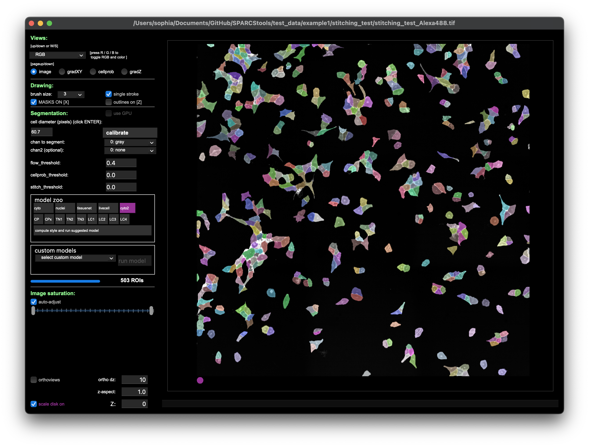

3.1. Generate a Cutting XML from segmentation mask using the Segmentation Loader.
[1]:
# import libraries
import numpy as np
import matplotlib.pyplot as plt
from lmd.lib import SegmentationLoader
/Users/sophia/mambaforge/envs/pylmd_docs/lib/python3.10/site-packages/tqdm/auto.py:21: TqdmWarning: IProgress not found. Please update jupyter and ipywidgets. See https://ipywidgets.readthedocs.io/en/stable/user_install.html
from .autonotebook import tqdm as notebook_tqdm
3.1.1. Load Segmentation Mask
The stitched images were segmented in cellpose and saved to file.

The results can then easily be loaded into python and transformed into an XML for excision using the LMD.
Besides Cellpose, the py-lmd is compatible with any segmentation method that results in a segmentation mask where each pixel is assigned to either background (0) or a cellid (not 0).
[2]:
from PIL import Image
im_frame = Image.open("./test_data/cellculture_example/stitching_test_Alexa488_cp_masks.png")
segmentation_mask = np.array(im_frame)
plt.imshow(segmentation_mask);
plt.axis("off");
3.1.2. Define cell sets
Define cell sets and assign specific cell ids to the well into which they should be excised.
[3]:
cell_ids = np.unique(segmentation_mask)
cell_sets = [{"classes": cell_ids[0:200], "well": "A1"},
{"classes": cell_ids[200:], "well": "A2"}]
3.1.3. Calibration points
Calibration points can be determined by reading out the coordinates of the chosen points (e.g. in FIJI). When working with cell culture models the built in calibration crosses within pylmd can be used to generate easily recognizable points to identify both in the imaging data and while loading the XML at the microscope.
[4]:
calibration_points = np.array([[0,0],[0,1000],[1000,1000]])
3.1.4. XML generation
Finally the calibration points and segmentation_mask are passed to the SegmentationLoader and they can be transformed into LMD compatible excision shapes.
A variety of further parameters can be passed to post-process the generated shapes (e.g. smoothing, shape dilation, or optimization of cutting path) using the loader_config.
[5]:
loader_config = {
'orientation_transform': np.array([[0, -1],[1, 0]]),
"shape_compression":42
}
sl = SegmentationLoader(config = loader_config,
processes = 4 # you can increase this number if you want to run over more cores this will speedup processing if you wish to process several cell batches into different wells
)
shape_collection = sl(segmentation_mask,
cell_sets,
calibration_points)
shape_collection.plot(fig_size = (10, 10))
/Users/sophia/Documents/GitHub/py-lmd/src/lmd/lib.py:676: UserWarning: Class 0 is not a valid class and was removed from the cell set
warnings.warn("Class 0 is not a valid class and was removed from the cell set")
Merging intersecting shapes
Merging intersecting shapes
dilating shapes: 100%|██████████| 199/199 [00:00<00:00, 1904.00it/s]
dilating shapes: 100%|██████████| 304/304 [00:00<00:00, 1884.35it/s]
creating shapes: 100%|██████████| 199/199 [00:00<00:00, 1325.69it/s]
creating shapes: 100%|██████████| 304/304 [00:00<00:00, 1248.46it/s]s]
calculating polygons: 100%|██████████| 199/199 [00:11<00:00, 17.02it/s]
calculating polygons: 100%|██████████| 304/304 [00:18<00:00, 16.54it/s]
[6]:
#print some statistics on the shapes included in the collection and visualize results
print(shape_collection.stats())
shape_collection.plot(calibration = True)
===== Collection Stats =====
Number of shapes: 503
Number of vertices: 30,080
============================
Mean vertices: 60
Min vertices: 19
5% percentile vertices: 37
Median vertices: 59
95% percentile vertices: 84
Max vertices: 125
None
3.1.5. write to XML
[7]:
shape_collection.save("./test_data/cellculture_example/shapes_1.xml")
[0 0]
[100000 0]
[ 100000 -100000]